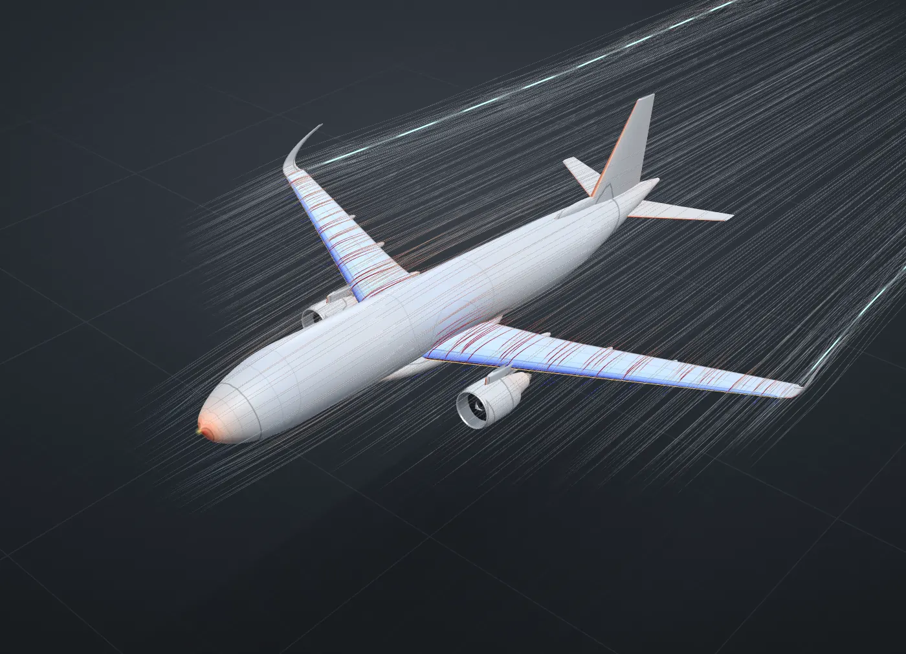
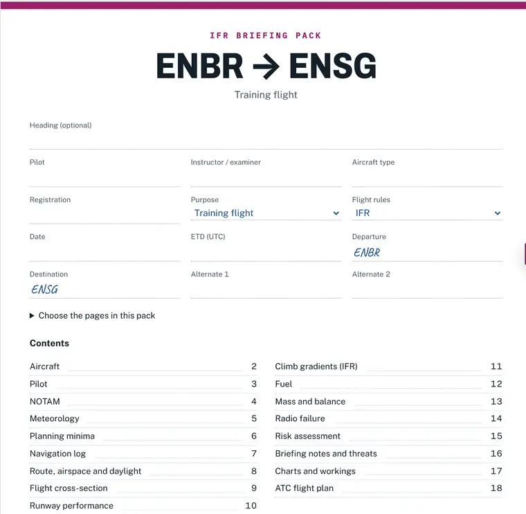

Understand every number before you fly
Birdbird is an aviation platform built in Norway for pilots, students and flight schools: 27 interactive labs on the EASA ATPL syllabus, a briefing pack you can print, and an instructor that answers from your own documents.

Vestland, 59.5–61.8° N. Terrain: Mapzen/AWS Terrain Tiles (SRTM, GMTED, EU-DEM © Copernicus), shaded by Birdbird.
Seven subject areas, built on the EASA ATPL syllabus
Each lab is a working model you can change and watch respond: take the wing to the stall, grow a thunderstorm, fly a VOR radial over Bergen. Where a lab shows numbers, they come from an illustrative A320.

Every lab works the same way
- UnderstandThe key concepts, one card each, linked to the place in the model where you see them.
- ExploreThe model itself. Change the inputs and the picture and the numbers change with them.
- Test yourselfShort questions that ask you to reason, not to recognise a stored answer.
Read each lab at the depth you need: Short, Deep dive or Instructor. In English and Norwegian.

From theory to the flight deck
One route, Bergen Flesland to Sogndal, followed from the map to the printed pack. Flight Intelligence answers the questions along the way.

Route Explorer
Draw the route on a VFR map in 2D or 3D, with airspace, airports and navaids, and read the terrain under it. The profile is computed from public elevation data.
- Route
- ENBR → ENSG
- Distance
- 76.5 NM
- Highest terrain within 4.3 NM
- 5,493 ft
- Highest point under the track
- 4,715 ft

Briefing pack
One pack per flight, in a fixed order: aircraft, NOTAM, weather, minima, profile, performance, fuel, mass and balance, radio failure and the flight plan. VFR or IFR. Add or remove pages as you need, then print it as a booklet.
Make a briefing packExample answer, from illustrative documents
What is the maximum crosswind for landing?
The maximum demonstrated crosswind is 25 kt.AFM 2.10, p. 2-14
It is a demonstrated value, not a limitation. Your SOP may set a lower one.SOP 4.3, p. 4-7
Rules questions cite Birdbird’s EASA rules library: Easy Access Rules for Air Operations, Revision 24, March 2026.
Flight Intelligence
An instructor that answers from your own AFM, QRH and SOP and from the EASA rules, and shows the passage each answer is built on. Use it to learn, to practise an oral or to work through a scenario. The documents you add are read and stored in your browser.
Ask Flight IntelligenceWhat it is built on
Rules are summarised and referenced, never reproduced, and every reference says which revision it is based on.
EASA
Easy Access Rules for Air Operations (Revision 24, March 2026) for minima and fuel, Aircrew for the ATPL subjects, and SERA for the rules of the air.
ICAO
Standard terminology, phraseology and procedure design concepts, such as holding entries and approach segments, in Birdbird’s own words.
AIP
Not an official chart. Birdbird does not use AIP data without the publisher’s permission, so check positions, airspace and frequencies against the current AIP.
Your documents
Flight Intelligence answers from your AFM, QRH and SOP first. They stay in your browser: no accounts, no analytics, no tracking cookies.
Teaching models, not operational data. The labs use simplified physics and typical values; A320 and B200 figures are illustrative, not manufacturer data.Data sources and licences
For flight schools
One consistent set of interactive theory, briefing material and type-rating preparation. Instructors use it on a classroom screen; students repeat the same material on their own between lessons.
- Labs an instructor can project, aligned to the ATPL subjects
- One standard briefing pack, VFR and IFR
- Type-rating setups: the King Air B200 trainer with 320 questions

Made by a pilot
I trained as an airline pilot. The hard parts were rarely the flying itself: they were the order of things, and the things you cannot see, like the air over the wing or why the altimeter is wrong on a cold day. Birdbird is the set of tools I wanted.
Daniel Nilsson
About Birdbird